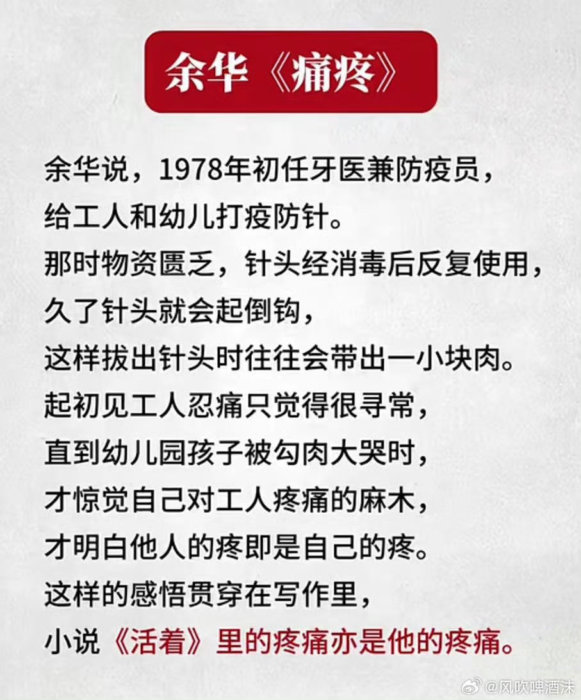

愿晚星照常升起（keep4o）
@tadatsukiei
@whyyoutouzhele

李老师不是你老师
@whyyoutouzhele
3月25日，福建。一男子讲述当副镇长时处理维稳的经历：“在体制内待久了，人的心肠会变硬，会变得冷血无情”。
余先生称，当时有个村民坐完牢出来后得了白血病，由于没钱看病，绝望之下向政府求助，并表示如果政府不管的话就会无差别报复社会。 https://t.co/3PyV1MSYBi